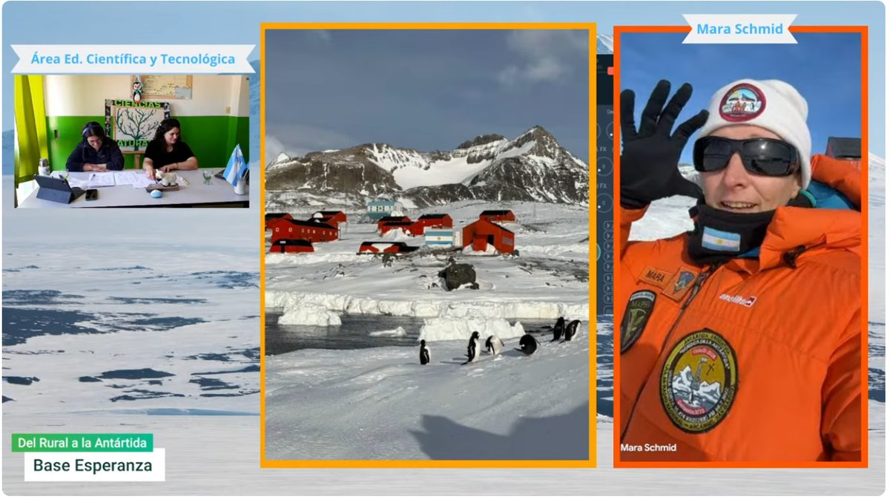

Desde el ESRN Rural Virtual, buscamos que nuestras aulas sean también espacios para preguntar, investigar, conocer nuevas experiencias y descubrir diferentes caminos posibles después de la escuela secundaria.

En esta oportunidad, la curiosidad de nuestros estudiantes, expresada a través de sus preguntas, nos permitió concretar un encuentro realmente especial: conversar con una científica que se encuentra trabajando en la Antártida.
Las preguntas que dieron origen a este encuentro surgieron de los intereses de nuestros estudiantes y de los contenidos, experiencias y aprendizajes que vienen construyendo durante este año y también a lo largo de sus trayectorias en el Área de Educación Científica y Tecnológica.
Mara Smith, en Base Esperanza
Así fue como tuvimos la posibilidad de encontrarnos, aunque fuera a través de una pantalla, con Mara Smith, Licenciada en Biología, egresada de la Universidad Nacional de La Plata.
Mara se encuentra transitando su tercera campaña antártica y actualmente cumple funciones como auxiliar de base en Base Esperanza. Además, está a cargo del Módulo Antártico de Producción Hidropónica (MAPI), una experiencia que nos permitió acercarnos a una forma de producir alimentos en un ambiente con condiciones muy diferentes a las que conocemos cotidianamente.
Mara también es integrante de LRA 36, la radio de Base Esperanza, sumando otra experiencia muy particular a su recorrido profesional.
A través de este encuentro pudimos conocer un poco más sobre su trabajo, su recorrido como bióloga y las particularidades de desarrollar actividades científicas y productivas en la Antártida.
Pero, sobre todo, pudimos acercarnos a una historia real. Una historia que nos permite mostrarles a nuestros estudiantes que detrás de una profesión también hay decisiones y oportunidades.
Una experiencia que va más allá de la entrevista
Este encuentro no fue solamente una entrevista. También fue una oportunidad para conversar sobre algo que muchas veces genera preguntas e incertidumbre en nuestros estudiantes:
¿Qué hacer después de la escuela secundaria?
Conocer el recorrido de Mara nos permitió pensar justamente en eso: en las posibilidades que existen, en las diferentes profesiones relacionadas con las ciencias y en los caminos que cada persona puede construir a partir de sus intereses.
Por este motivo, la propuesta se relaciona también con el Taller de Egreso, un espacio que se realiza en ESRN Rural Virtual desde el año 2025 y que se desarrolla nuevamente en este año, buscando acompañar a nuestros estudiantes en ese momento tan importante de pensar qué quieren hacer después de terminar la secundaria.
Porque consideramos que mostrar experiencias concretas también es una manera de acompañar a nuestros estudiantes a imaginar su futuro.
Cuando la tecnología nos acerca
Para quienes formamos parte del ESRN Rural Virtual, estas experiencias tienen un significado muy especial.
Nuestros estudiantes se encuentran distribuidos en diferentes sedes y parajes de la provincia de Río Negro. Sin embargo, la virtualidad nos permite generar encuentros que, de otra manera, serían muy difíciles de concretar.
En esta oportunidad, esa conexión nos permitió acercarnos a la Antártida. Una pantalla se convirtió en un puente entre nuestras aulas y Base Esperanza. Y detrás de ese encuentro hubo muchas personas trabajando para que fuera posible.
Gracias a quienes hicieron posible este encuentro
Queremos agradecer especialmente a Mara Smith, por su tiempo, su predisposición y por compartir con nosotros parte de su experiencia profesional y de su vida en la Antártida. También queremos agradecer a todas las personas que hicieron posible esta conexión y que trabajaron para que el encuentro pudiera llegar a nuestra comunidad.
Un agradecimiento especial a los profesores que estuvieron delante y detrás de cámara, acompañando la organización y el desarrollo del streaming:
- Aimé Funes
- Verónica Lojo
- Juan Rodeghiero
- Romina Agulles
- Lucas Rodeland
- Walter Esquercia.
A cada uno de ellos, gracias por el compromiso, el tiempo y el trabajo compartido.
Y, por supuesto, gracias a nuestros estudiantes, porque fueron sus preguntas, su curiosidad y sus ganas de conocer las que hicieron posible que esta historia comenzara.
Quizás lo más valioso de esta experiencia sea justamente descubrir que una pregunta puede abrir una puerta.
Una pregunta nacida en nuestras aulas nos permitió conocer una profesión, una experiencia de vida, una forma de hacer ciencia y también imaginar otros caminos posibles.
Desde el ESRN Rural Virtual queremos seguir generando estos espacios de encuentro, porque creemos que enseñar también es acercar mundos, despertar curiosidades y ayudar a nuestros estudiantes a descubrir que existen muchos caminos por recorrer.
Esta vez, nuestro camino llegó hasta la Antártida, y todo comenzó con algo tan sencillo y tan poderoso como una pregunta.
Romina Agulles · Prof. de Biotecnología · ESRN Rural Virtual